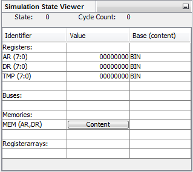

The simulation window is only visible during a simulation. It displays the information of all declared registers, busses, memories and register arrays and the current state and cycle.
On top of the table it contains the current state and cycle.
The table displays the current entries of all declared components. A change of an entry is highlighted in yellow. By double-clicking a table cell that displays an entry it becomes editable an a new entry can be entered. To apply the changes use the enter key. To discard them use the escape key.
Each declared memory displays a button that opens the window where the content of the corresponding memory is shown and editable.
Each declared register array has this button as well to manage its contents.